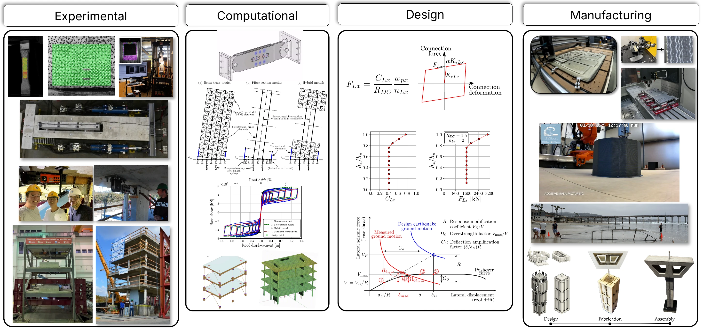
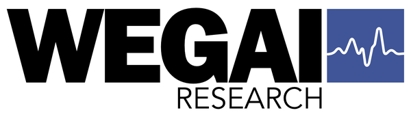
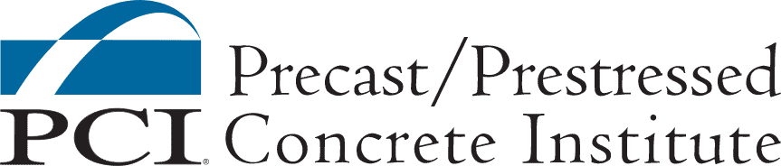

Department of Structural Engineering · UC San Diego
Tsampras Research Group
Structural engineering research at UC San Diego for low-damage, hazard-resilient structural systems through design, experiments, simulations and manufacturing.

Mission
Contribute to the improvement of safety and resilience of our built environment.
Goals
Research
Develop low-damage, high-performance structural components and systems.
Education
Educate the next generation of diverse structural engineers and enable them to conduct ethical, innovative research.
Outreach
Share the importance and contribution of structural engineering to society.
Core values
Scholarship and Excellence
- Highest quality in education and research.
- Focus on fundamental principles of engineering.
- Contribute to the structural engineering profession.
- Advance the knowledge in structural engineering.
- Share our understanding in a thorough manner.
- Encourage curiosity with creative mindset.
- Promote collaborative research activities.
Integrity
- Honest and fair environment.
- Trust and respect our peers.
- Be open to constructive feedback.
- Produce unbiased research outcomes.
Diversity, Equity, and Inclusion
- Equal opportunities for students and researchers independently of their age, gender, ethnicity, race, religion, disability, or sexual orientation.
- Listen to different perspectives and learn from others.
Current research
Design criteria and performance evaluation for prefabricated reinforced concrete arches, combining soil–structure interaction analyses with material, component and system tests.
Triaxial shake-table tests of a 230 kV transformer with and without seismic response modification devices and spring washer uniaxial tests.
A replaceable steel fuse connection for mass timber braced frames, made from machined steel angles that yield uniformly in flexure, characterized through quasi-static cyclic tests, digital image correlation and finite element models.
No matching items
Latest news
No matching items
Sponsors and partners
 